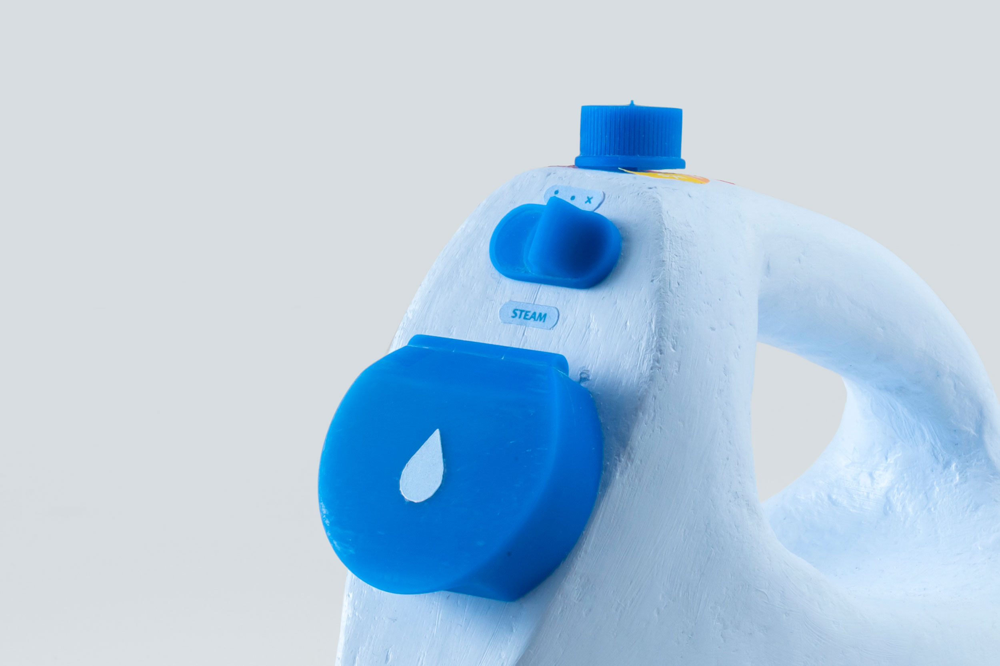
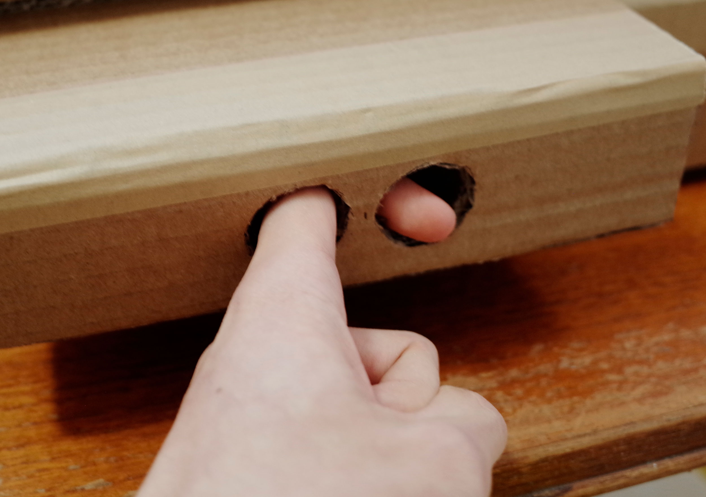
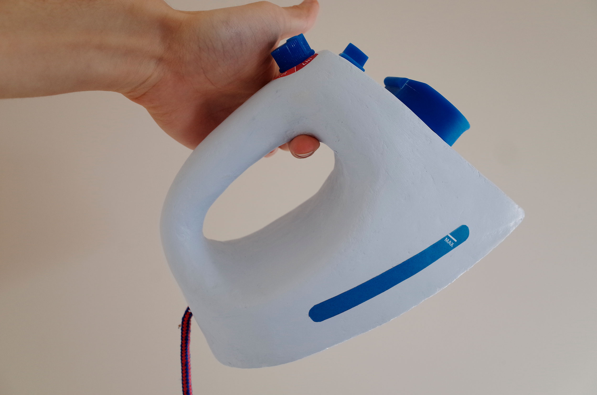

Many things work,
few things resonate.
Filling the gap between design that works and design that matters.
A link between physical and digital systems.
In a world where digital technology has become the norm, how might we continue to use the physical products that we've become attached to?
